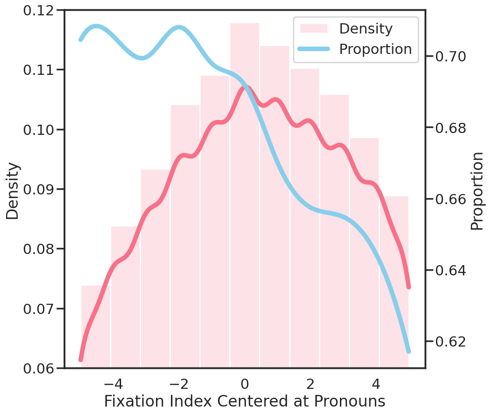

To investigate user's querying behavior with G-VOILA, we conducted a user-enactment study where participants submit queries in any manner they believed G-VOILA should be able to comprehend and respond to, given its sensing capabilities. Hardware information and experiment setup are shown as below.
We answer three research questions through data collected in this user enactment study and list take-away conclusions. For detailed analysis and discussion, please refer to our paper.
|
Breakdown of user queries by their anticipation of G-VOILA usage. “Lessons learned” are short for “Lessons learned from other well-designed system”. |
Take-aways: The majority of user queries anticipate G-VOILA to leverage gaze data to pinpoint objects of interest (67.2%) and visual data to supplement context information (22.2%).
|
By comparing user's verbal questions with their reformulated queries, we identified three categories of language expression patterns: Take-aways: The majority of user queries involve usage of pronouns (68%, 48%, 43%) and omission of certain constraint (20%, 40%, 39%). |
Identified categories were shown in each card, with a checkmark indicating the required data for refilling user’s query intent. |
|
Take-aways: Although users may have wandering gaze on irrelevant surroundings when expressing queries, they tend to focus longer on relevant objects(ùëöùëíùëéùëõ ‚âà1.1ùë†) than irrelevant objects (ùëöùëíùëéùëõ ‚âà0.75ùë†). |

Take-aways: User’s visual attention on relevant objects peaks at the mention of pronouns and then shifts away, indicating the existence of mouth-eye coordination but with gaze movements ahead. |
|
Take-aways: Users demonstrate a pronounced focus on relevant objects at the beginning of query formulation. |
Take-aways: Users typically engage with objects of interest before initiating a related query, with an average start up time of 4.62s. |
Examples of ...
We leverage several open-source vision models and GPT-4 to implement a functional gaze-faciliatated querying system, referred to as VOILA-G. We included 16 participants to query with VOILA-G in two daily scenarios: shopping and domestic living. We also implemented several baselines for comparison which difference lies in the method of incorporating gaze. (Note that VOILA-A was not yet available by the time this work was done.) Users were required to score the answers based on their satisfaction, usefulness, and mental demand, etc.
Participants were involved in a 4-round querying session, with each round consisting of 6 queries. The variables in this study include:
(1) Querying paradigm (whether user notice the existence of gaze sensing);
(2) Baseline models. For detailed experiment pipeline and implementation details, please refer to our paper.
We calculated the objective score by examining whether the key objects in the ground truth label appeared in the response and identified semantically parallel objects as detected keywords. We categorized the questions into Explicit Query and Ambiguous Query based on whether key object names were spoken in the query.
Take-aways: Incorporating gaze as a temporal and spatial indicator can both enhance the ability to discern user’s interest. A synergistic catalytic effect exists when incorporating both temporal and spatial properties. Head direction can be used as a less precise indicator of user’s intent. Existing saliency models fall short for G-VOILA’s use case.
The subjective scoring for each answer indicates that participants felt VOILA-G can more effectively captured their query intentions with the aid of gaze data. For querying paradigm, participants' preferences for the two strategies varied individually, with G-VOILA holding an overall advantage.
Take-aways: As users became more familiar with G-VOILA, they increasingly leveraged its capabilities by posing more ambiguous queries, which have lower performance degradation on VOILA-G and better user experience.
@article{wang2024g,
title={G-VOILA: Gaze-Facilitated Information Querying in Daily Scenarios},
author={Wang, Zeyu and Shi, Yuanchun and Wang, Yuntao and Yao, Yuchen and Yan, Kun and Wang, Yuhan and Ji, Lei and Xu, Xuhai and Yu, Chun},
journal={Proceedings of the ACM on Interactive, Mobile, Wearable and Ubiquitous Technologies},
volume={8},
number={2},
pages={1--33},
year={2024},
publisher={ACM New York, NY, USA}
}